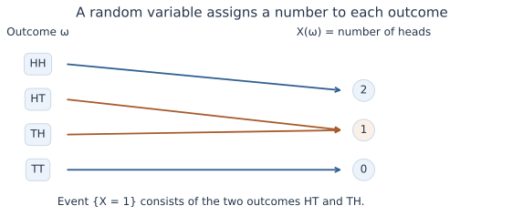
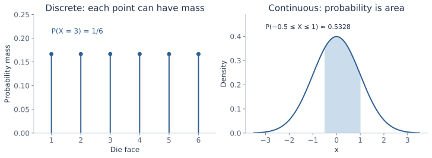
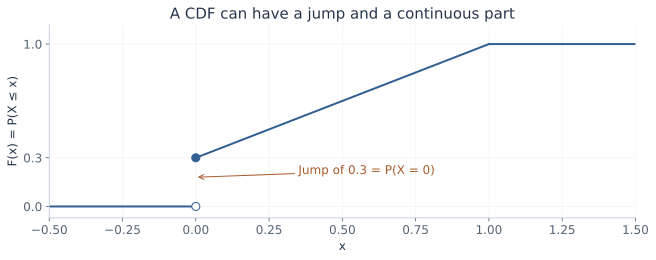
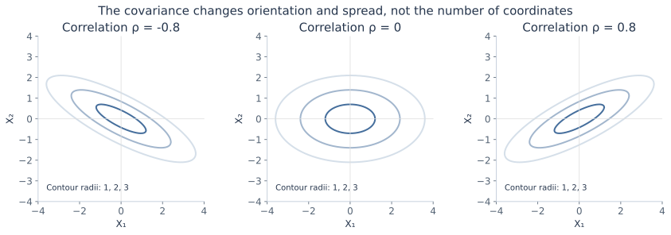
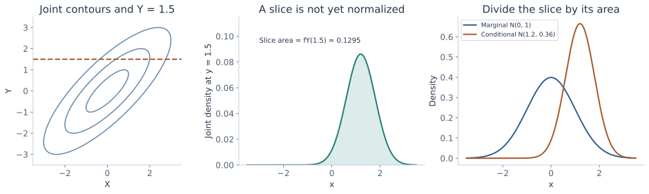
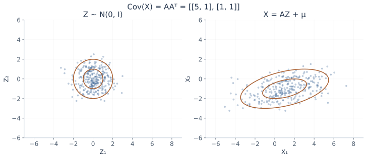
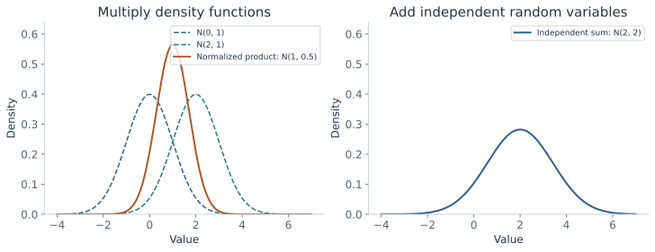

Probability and
multivariate Gaussians
Start with outcomes and events. Build distributions, expectations, and covariance, then see how a Gaussian turns those ideas into geometry and prediction.
In the CNN training chapter, probability described a dropout mask and statistics described a batch of activations. Here those ideas become a language for modeling data itself. We will distinguish what a random quantity can do, how its uncertainty is described, and what changes after observing related information.
The chapter combines the probability refresher and the multivariate-Gaussian continuation. It includes the distribution table, handwritten identities, Gaussian operations, and the distinction between marginal and conditional distributions. The next lecture starts regression and Gaussian classification; parameter estimation for those models belongs to the next chapter.
What you should be able to do afterward
- Distinguish outcomes, events, random variables, probability masses, densities, and CDFs.
- Calculate joint, marginal, and conditional quantities and apply Bayes' rule.
- Derive expectations, variances, covariance identities, and the moments of the lecture's distribution families.
- Read the Gaussian density using matrix dimensions, covariance, determinants, and Mahalanobis distance.
- Derive Gaussian marginals, conditionals, affine transformations, sums, products of density functions, and the canonical parameterization.
- Identify when independence, positive definiteness, finite moments, or joint Gaussianity is actually required.
Reading route: sections 1–5 establish the probability language; 6–8 build moments and covariance; 9–15 develop Gaussian models. Section 16 connects the ideas to later ML methods. The chapter is intentionally substantial: use the checkpoints to stop after one coherent piece rather than trying to memorize all formulas at once.
Contents · choose a section
1. Why the lecture returns to probability
Lecture connection: the opening ML terminology, problem-type, and method-summary slides.
An example is one observed instance. Its features describe the information available to a model; its target, label, or response is what a supervised model should predict. Regression predicts numerical quantities; classification predicts categories. A model can also learn structure without a supplied target, as in clustering, factor models, or dimensionality reduction. Reinforcement learning instead involves actions and rewards over interactions.
Parameters are learned quantities inside a model. Model selection chooses among model families or settings; regularization restricts or discourages certain fitted behaviors. Feature creation and selection change the representation on which learning operates. Training error measures fit on the data used to learn; test error estimates performance on held-out data under the evaluation setup. Generalization concerns behavior beyond the training examples. Cross-validation is a procedure for assessing choices through repeated training/validation splits.
The opening slides place linear/logistic regression, neural networks, trees, Bayes models, margin methods, nearest neighbors, ensembles, and matrix-factorization methods on the same map. They are a recap, not separate derivations in this lecture. Probability supports several of them by describing uncertainty, assumptions about data, and what observations imply about unobserved quantities.
It also supports tasks beyond class labels: density estimation describes where data are likely; anomaly detection looks for unusual observations; missing-data methods reason about unobserved entries; time-series models describe dependence over time. Calibration concerns whether predicted probabilities match observed frequencies. Recommender systems may combine these ideas with learned representations. These are application connections; each needs assumptions appropriate to its own task.
Two different objects: a distribution is a mathematical description of uncertainty. A finite dataset is a set of observations. Its average or histogram can estimate features of a distribution, but the estimate and the underlying quantity are not the same object.
2. Outcomes, events, and random variables
Lecture connection: die rolls, sample spaces, events, probability axioms, and the random-variable definition.
An experiment has a sample space Ω: the set of possible outcomes. A single outcome is denoted ω. An event is a subset of Ω. For a die, Ω={1,2,3,4,5,6}; “an even face” is the event {2,4,6}.
A probability rule maps events to numbers. It assigns nonnegative probabilities, gives the whole space probability 1, and adds probabilities over disjoint events. More precisely, for pairwise disjoint events \(A_1,A_2,\ldots\):
It follows that \(P(\varnothing)=0\), \(P(A^c)=1-P(A)\), and \(P(A\cup B)=P(A)+P(B)-P(A\cap B)\). The last subtraction prevents the intersection from being counted twice.
The familiar favorable-outcomes/total-outcomes formula is valid for a finite equally likely sample space. It is not the definition for every experiment. Long-run relative frequencies provide an interpretation and estimation method under suitable repetition assumptions; they do not require every possible outcome to be equally likely.
A random variable maps outcomes to numbers
A real-valued random variable is a function \(X:\Omega\to\mathbb R\). For two coin tosses, let X count heads. HH maps to 2, HT and TH map to 1, and TT maps to 0. The event {X=1} is shorthand for the outcomes whose assigned value is 1.

Uppercase X names the random variable; lowercase x names a possible realized value. \(P(X=x)\) means the probability of the event consisting of outcomes that produce x. Different random variables can be defined on the same experiment.
3. Mass, density, and a CDF that covers both
Lecture connection: discrete, continuous, and mixed random variables; PMFs, PDFs, and CDFs.
Discrete: attach probability to points
For a countable set of possible values, the probability mass function is \(p_X(x)=P(X=x)\). It is nonnegative and sums to one. For a fair die, each face has mass 1/6. For the two-coin count with independent fair tosses, the masses at 0,1,2 are 1/4,1/2,1/4.
Continuous with a density: probability is area
An absolutely continuous distribution has a probability density \(f_X\) such that:
A density value is not a point probability. A single point has zero probability in this setting, while the density there can be positive or greater than 1. For a uniform distribution on [0,0.2], the density is 5 and the probability of [0.04,0.10] is \(5(0.10-0.04)=0.30\).
For a small interval of width Δx and a sufficiently smooth density, \(P(x\le X\le x+\Delta x)\approx f_X(x)\Delta x\). The exact finite-interval statement is the integral. The lecture's infinitesimal notation is a useful intuition, not an instruction to substitute a density for a probability.

The cumulative distribution function
The CDF \(F_X(x)=P(X\le x)\) applies to every real-valued random variable. It is nondecreasing and right-continuous, approaches 0 toward −∞ and 1 toward +∞, and satisfies:
For a discrete variable, the CDF jumps at values with positive mass. For a variable with a density, \(F_X(x)=\int_{-\infty}^xf_X(t)\,dt\); differentiating recovers f where appropriate. We use the conventional ≤ definition. The source's occasional strict-< notation makes no difference for a density, but does matter at an atom.
Mixed: a point mass plus a continuous part
Suppose X is 0 with probability 0.3, and with probability 0.7 it is drawn uniformly from (0,1). Its CDF is:
The continuous density part is 0.7 on (0,1), with total mass 0.7. The remaining 0.3 sits at zero. An ordinary density alone cannot represent that atom. A mixed distribution is not the same as a singular distribution; the lecture focuses on the discrete, density, and mixed cases.

4. Joint, marginal, and conditional distributions
Lecture connection: joint distributions, factorization under independence, and conditional density normalization.
A joint distribution describes variables together
For discrete X and Y, \(p_{X,Y}(x,y)=P(X=x,Y=y)\). A joint table can be reduced to a marginal by summing out the other variable: \(p_X(x)=\sum_yp_{X,Y}(x,y)\). With a joint density, integrate instead:
Marginalization averages over possibilities for the unobserved variable. It does not select one particular value of it.
Conditioning selects a context and renormalizes
For events A,B with \(P(B)>0\), define \(P(A\mid B)=P(A\cap B)/P(B)\). In a table, restrict attention to the B part and divide by its total mass. For a joint density with \(f_Y(y)>0\), the corresponding conditional density is:
The denominator integrates over the variable being predicted, holding the observed value fixed. It normalizes a slice into a density in x. This formula does not divide by \(P(Y=y)\), which is zero for an ordinary continuous Y. Conditional densities provide the appropriate continuous formulation.
Independence is a factorization property
Independent variables have \(p_{X,Y}(x,y)=p_X(x)p_Y(y)\), or the analogous density factorization. Conditioning on one then leaves the other's distribution unchanged wherever the conditional expression is defined. Independence is stronger than zero covariance. It is also different from disjoint events: two disjoint events with positive probabilities have intersection probability zero, so they cannot be independent.
Bayes' rule is the joint distribution written two ways
The density version has the same structure. In ML language, a prior and a likelihood combine into a posterior after normalization. Reversing a conditional generally changes its value; Bayes' rule tells you exactly how the marginal probabilities enter that reversal.
5. Explore conditioning in a small joint table
The following numbers are an invented example, not measured data. Think of two binary variables: rain R and lateness L. Enter nonnegative counts; the tool divides them by their total. The initial table has 18 rainy/late, 12 rainy/on-time, 7 dry/late, and 63 dry/on-time cases.
Joint-probability workbench
| Late L=1 | On time L=0 | Row total | |
|---|---|---|---|
| Rain R=1 | |||
| Dry R=0 | |||
| Column total |
A conditional with a zero conditioning total is undefined, not zero. Fractional counts are allowed as nonnegative weights; their ratios define the same finite probability model.
Initially, \(P(R=1)=0.30\), \(P(L=1)=0.25\), and \(P(R=1,L=1)=0.18\). Hence \(P(L=1\mid R=1)=18/30=0.60\), while \(P(R=1\mid L=1)=18/25=0.72\). Under independence, the joint probability would instead be \(0.30\cdot0.25=0.075\).
6. Expectation, variance, and useful identities
Lecture connection: mean, variance, linearity of expectation, and the variance-of-a-sum identities.
Expectation is a weighted average, not a likely value
The formulas apply to discrete or density-based cases; a mixed distribution includes both contributions. Put g(x)=x to obtain the mean μ. Put g(x)=x² to obtain the second raw moment. The mean need not be a possible outcome: a fair die has mean 3.5.
We use linearity with finite expectations and covariance identities with finite second moments. Heavy-tailed distributions may not satisfy these conditions. For example, the Pareto family later in the chapter requires explicit restrictions before a mean or variance formula applies.
Derive the variance identity
Variance measures squared spread around the mean; standard deviation is its square root and has the original variable's units. Expanding the square is what makes second raw moments useful.
Expectation is linear even for dependent variables
This follows by distributing the sum or integral over the expression. Independence is not required. In contrast, replacing \(\mathbb E[XY]\) with \(\mathbb E[X]\mathbb E[Y]\) generally does require more than linearity; independence is a sufficient condition when the expectations exist.
Shift and rescale a variable
Since \(aX+b-\mathbb E[aX+b]=a(X-\mathbb E[X])\):
A constant shift changes the mean but not the spread. A scale multiplies variance by its square, even when the scale is negative.
The missing term when adding uncertain quantities
Define covariance by \(\operatorname{Cov}(X,Y)=\mathbb E[(X-\mu_X)(Y-\mu_Y)]\). Expanding the product gives \(\operatorname{Cov}(X,Y)=\mathbb E[XY]-\mu_X\mu_Y\). Now expand the centered square of aX+bY:
Independent variables have covariance zero, but dependent variables can also have covariance zero. For X uniform on [−1,1] and Y=X², symmetry gives E[X]=E[X³]=0, so Cov(X,Y)=0, yet Y is completely determined by X. Zero covariance rules out a linear association measured by this moment, not every form of dependence.
In the initial joint workbench, R and L are binary indicators, so E[R]=0.30, E[L]=0.25, and E[RL]=0.18. Their covariance is \(0.18-0.30(0.25)=0.105\). This is why an independence assumption would lose information about the table.
7. Derive the moments of the lecture's distribution families
Lecture connection: the seven-row distribution table and its first-principles mean/variance exercise.
Learn the support and parameter convention along with each formula. A PMF or density written without its support does not fully specify a distribution. The Gaussian row is derived in section 9; the other six families are developed here.
Bernoulli: one binary event
For X∈{0,1}, let P(X=1)=p and P(X=0)=1−p, with 0≤p≤1. Then:
The equality X²=X is specific to a zero/one indicator. A dropout gate is exactly this kind of variable, with its Bernoulli parameter interpreted as a keep probability.
Binomial: count independent successes
Let X=I₁+⋯+Iₙ for n independent Bernoulli(p) indicators. For k=0,…,n, a particular arrangement of k successes has probability pᵏ(1−p)ⁿ⁻ᵏ, and there are \(\binom nk\) such arrangements:
Linearity gives E[X]=np without needing independence. For the binomial variance, independence makes all cross-covariances zero:
If successes are dependent, the covariance terms generally remain, and the count need not be binomial. For n=10,p=0.3, the binomial mean is 3 and variance 2.1.
Uniform: constant density over a finite interval
For a<b, the density is 1/(b−a) on [a,b] and zero elsewhere. Direct integration gives:
Subtracting the squared mean yields:
The interval length is squared in the numerator. Endpoint inclusion does not alter a density-based probability.
Geometric: trial number of the first success
Use support k=1,2,… and success probability 0<p≤1. With q=1−p, the PMF is pqᵏ⁻¹: k−1 failures followed by a success. The geometric series \(S(q)=\sum_{j=0}^{\infty}q^j=1/(1-q)\) normalizes this PMF.
Differentiate the series for 0≤q<1: S′(q)=1/(1−q)² and S″(q)=2/(1−q)³. These derivatives provide the needed weighted sums:
The first sum follows by differentiating \(\sum_{k\ge1}q^k=q/(1-q)\); it equals S′(q). A different geometric convention counts failures before success and starts at zero. Its mean is (1−p)/p, while its variance is unchanged. Check the support before using either mean.
Exponential: a nonnegative waiting time
Integration by parts is the product rule used backward: \(\int u\,dv=uv-\int v\,du\). It lets us move a derivative from a polynomial factor to an exponential factor when computing moments.
With rate λ>0, the density is \(\lambda e^{-\lambda x}\) for x≥0. Rate has inverse-time units; it is not the mean. Integration by parts, with \(u=x\), \(dv=\lambda e^{-\lambda x}\,dx\), and \(v=-e^{-\lambda x}\), gives:
Another integration by parts gives \(\mathbb E[X^2]=(2/\lambda)\mathbb E[X]=2/\lambda^2\). Therefore Var(X)=1/λ². Its survival probability is P(X>t)=\(e^{-\lambda t}\) for t≥0. Consequently P(X>s+t|X>s)=\(e^{-\lambda t}\): the remaining waiting-time distribution does not depend on how long has already elapsed in this model.
Pareto: moments need not exist
Use shape α>0, scale b>0, and support x≥b. The density is \(f(x)=\alpha b^\alpha x^{-(\alpha+1)}\). To see both the moment formula and its restriction, integrate the general r-th power:
The upper endpoint converges only when r−α<0. In particular:
The variance formula follows by subtracting the squared mean from \(\mathbb E[X^2]=\alpha b^2/(\alpha-2)\). For 1<α≤2, the mean is finite but the second moment and variance diverge. For α≤1, the mean itself is infinite, so the usual finite-mean variance is not defined. A finite sample can still have an ordinary numerical average; that does not make the population mean finite.
8. Covariance matrices: the linear-algebra bridge
Lecture connection: covariance identities and the covariance matrix used by the multivariate Gaussian.
Correlation rescales covariance
For positive finite variances, define \(\rho=\operatorname{Cov}(X,Y)/(\sigma_X\sigma_Y)\). It lies between −1 and 1 and removes the units of covariance. If either variance is zero, this ordinary correlation expression is undefined.
Why is the magnitude bounded by one? For centered variables U=X−μₓ and V=Y−μᵧ, the expected square E[(U−tV)²] is nonnegative for every t. Minimizing that quadratic over t gives \(\operatorname{Cov}(X,Y)^2\le\operatorname{Var}(X)\operatorname{Var}(Y)\). Division by the positive standard deviations yields |ρ|≤1.
Collect related variables into a vector
A column vector \(X=[X_1,\ldots,X_d]^\top\) has mean \(\mu=\mathbb E[X]\in\mathbb R^d\). Its covariance matrix is:
The outer product of a d×1 column and a 1×d row gives a d×d matrix. Diagonal entries are variances; off-diagonal entries are covariances. The transpose exchanges rows and columns. A dot product \(v^\top w\) produces a scalar; an outer product \(vw^\top\) produces a matrix. Tracking these dimensions prevents many Gaussian-formula errors.
Why covariance is positive semidefinite
Covariance is symmetric. For any deterministic column vector v:
This is positive semidefiniteness. It is positive definite when the expression is strictly positive for every nonzero v. A positive-definite matrix has a positive determinant and an inverse. A singular covariance can occur when a nontrivial linear combination has zero variance, as with X₂=2X₁.
For a symmetric 2×2 covariance \(\Sigma=[a,c;c,b]\), positive definiteness requires a>0 and ab−c²>0; then b>0 follows. In standard-deviation/correlation form:
With positive σ₁,σ₂, |ρ|<1 gives the nonsingular case. |ρ|=1 collapses a dimension. Correlation changes orientation and dependence; unequal diagonal variances can stretch the axes even when correlation is zero.
An inverse matrix and a determinant have different roles
The inverse reverses an invertible linear transformation. The determinant describes its signed volume scaling; its absolute value is the volume factor. For the 2×2 matrix above:
Later, Σ⁻¹ will measure a direction's squared distance relative to spread, while √|Σ| controls the Gaussian density's normalization volume. These are connected but distinct functions.
9. The normal distribution from its normalization to its moments
Lecture connection: the normal-density plot and the requested mean/variance derivation.
We write \(X\sim\mathcal N(\mu,\sigma^2)\), where the second parameter is variance, not standard deviation. For σ>0:
The exponent penalizes squared standardized distance. Moving μ shifts the curve. Increasing σ broadens it and lowers its peak because its total area must remain one. A narrow Gaussian can have a density height greater than one.
Where √(2π) comes from
Let \(I=\int_{-\infty}^{\infty}e^{-z^2/2}\,dz\). Its square is a two-dimensional integral with a circularly symmetric integrand. Convert to polar coordinates, where the area element is r dr dθ:
The radial integral is 1 after substituting u=r²/2. Since I is positive, I=√(2π), so the standard-normal density \(\phi(z)=e^{-z^2/2}/\sqrt{2\pi}\) integrates to one.
Derive the standard normal's mean and variance
The function zφ(z) is odd, so its integral across the real line is zero: E[Z]=0. Also φ′(z)=−zφ(z). Integration by parts gives:
The boundary term vanishes because the exponential tail dominates the linear factor. Thus Var(Z)=1. For X=μ+σZ, the affine identities already derived give E[X]=μ and Var(X)=σ². This also explains the 1/σ factor in the general density: stretching an interval by σ requires lowering its density by the same factor to preserve probability.
Turn values into probabilities
Define \(\Phi(z)=\int_{-\infty}^z\phi(t)\,dt\). Standardizing X gives:
Φ has no elementary antiderivative formula; software or tables evaluate it. For a standard normal, P(−1≤Z≤1)≈0.6827. That one-dimensional interval probability will not automatically be the probability inside a two-dimensional covariance ellipse.
10. What makes a vector jointly Gaussian?
Lecture connection: independent and dependent Gaussian coordinates, the joint density, and moment parameterization.
A Gaussian random vector has the property that every scalar linear combination \(v^\top X\) is normally distributed, allowing zero-variance constants as degenerate normals. A useful construction is \(X=\mu+LZ\), where Z has independent standard-normal coordinates and \(LL^\top=\Sigma\). With a square invertible L, this produces a nonsingular covariance.
For positive-definite Σ, the ordinary density on \(\mathbb R^d\) is:
Check the dimensions: x−μ is d×1, its transpose is 1×d, and Σ⁻¹ is d×d. The entire quadratic expression is a scalar. Σ contains d(d+1)/2 distinct entries because it is symmetric, while μ has d entries. Positive definiteness restricts which covariance entries can be chosen together.
Derive the normalization factor by a change of variables
The independent standard-normal vector has density \((2\pi)^{-d/2}e^{-z^\top z/2}\). Set x=μ+Lz, so z=L⁻¹(x−μ). A linear transformation scales volume by |det L|, so the transformed density divides by this factor:
The second equality follows from \(|LL^\top|=(\det L)^2\). This gives the Gaussian prefactor and exponent together. The square root of the determinant is a volume scale, not another arbitrary constant to memorize.
The inverse/determinant formula has a condition
Every covariance is positive semidefinite, but an ordinary full-dimensional Gaussian density needs positive definiteness. If X₂=X₁ or X₂=−X₁/2, the pair can still be a jointly Gaussian vector, yet it lies on a line, has determinant zero, and has no ordinary density with respect to two-dimensional area. Do not substitute a singular Σ into the inverse formula.
This distinction reconciles the lecture's dependent-coordinate examples with its density expression. Gaussian distributions include degenerate cases; the displayed nonsingular density does not cover them without a different formulation.
11. Read a Gaussian as geometry
Lecture connection: bivariate surfaces, equal-density contours, and changing variances/correlations.
Define the squared Mahalanobis distance from the mean:
The density depends on x only through this quadratic form. Points with the same D² have the same density. Unlike Euclidean distance, Mahalanobis distance accounts for how much variation is expected in each direction and how the coordinates vary together.
Principal directions explain the ellipses
A symmetric positive-definite covariance can be written \(\Sigma=QDQ^\top\). Q contains orthonormal eigenvectors, and D is diagonal with positive eigenvalues λᵢ. An eigenvector is a direction that the matrix scales without rotating into another direction. In coordinates \(u=Q^\top(x-\mu)\):
The level D²=c² therefore has semiaxis lengths c√λᵢ along the eigenvectors. Large variance means a longer axis and a smaller distance penalty per unit movement in that direction. Equal eigenvalues give a sphere; unequal ones give ellipsoids. In two dimensions, these are circles or ellipses.

The determinant controls volume and peak height
Since \(|\Sigma|=\prod_i\lambda_i\), the square root of the determinant multiplies the principal standard deviations. In two dimensions, the ellipse D²≤c² has area \(\pi c^2\sqrt{|\Sigma|}\). A Gaussian with a larger covariance volume spreads its unit probability over more space, reducing the peak \(f(\mu)=1/((2\pi)^{d/2}\sqrt{|\Sigma|})\).
For a standard bivariate Gaussian, use polar coordinates to find the mass inside radius c:
This also holds for a nonsingular affine transformation into a bivariate Gaussian. Radius 1 encloses about 39.35%, not the one-dimensional 68.27%. A 95% probability ellipse needs \(c=\sqrt{-2\log(0.05)}\approx2.448\). A contour is a set of equal density; the probability belongs to an enclosed region.
12. Gaussian coordinates do not guarantee a Gaussian joint model
Lecture connection: the independent/dependent cases and the prompt to find Gaussian marginals that are not jointly Gaussian.
Independent Gaussian coordinates are jointly Gaussian
For independent \(X_i\sim\mathcal N(\mu_i,\sigma_i^2)\), multiplying the scalar densities gives a joint density with diagonal covariance. Conversely, for a nonsingular jointly Gaussian vector whose covariance is diagonal, its exponent and normalizer factor into scalar Gaussian densities. Thus its coordinates are independent.
More generally, zero cross-covariance between two blocks of a jointly Gaussian vector implies independence of those blocks. The joint-Gaussian assumption is what makes this stronger conclusion possible. It is not a general theorem about arbitrary uncorrelated data.
Dependent can still be jointly Gaussian
If Z is standard normal and X=[Z,−Z/2]ᵀ, every linear combination is \((a-b/2)Z\), which is Gaussian or constant. The vector is jointly Gaussian, but singular. Its covariance is [1,−1/2;−1/2,1/4], with determinant zero. This is the line-supported case, not an ordinary two-dimensional bell-shaped density.
A counterexample with normal marginals and zero covariance
Let Z be standard normal and let S independently be +1 or −1 with equal probability. Define X=Z and Y=SZ. Both X and Y are standard normal because changing the sign of a symmetric normal leaves its distribution unchanged. Also:
Yet |X|=|Y| always, so the variables are dependent. The sum X+Y is zero whenever S=−1, giving a point mass of 1/2 at zero. When S=+1, it is 2Z. A nondegenerate normal has no point mass; this sum is not normal. Therefore the pair is not jointly Gaussian despite normal marginals and covariance I.
The example separates three statements: each coordinate is normal; coordinates have zero covariance; the vector is jointly Gaussian. None of the first two, even together, replaces the third. It also shows why a positive-definite covariance alone does not establish that a vector has a full-dimensional density.
13. Marginal and conditional Gaussians, with derivations
Lecture connection: joint/marginal/conditional notation, block covariance, and the conditioning formulas.
Partition the vector and keep the blocks straight
X₁ and X₂ can themselves be vectors. If their lengths are d₁ and d₂, Σ₁₂ is d₁×d₂ and Σ₂₁=Σ₁₂ᵀ. Assume the full covariance is positive definite for the ordinary-density formulas below.
Marginalization retains the matching blocks
The marginal X₁ is \(\mathcal N(\mu_1,\Sigma_{11})\), and X₂ is \(\mathcal N(\mu_2,\Sigma_{22})\). One explanation is that selecting coordinates preserves the defining Gaussian property: every linear combination of the selected coordinates is also a linear combination of the original vector. Its mean and covariance are the corresponding subvector and submatrix.
Do not invert the whole covariance and then select a block to get the marginal covariance. A block of a matrix's inverse is generally not the inverse of the matching block. Marginalization and conditioning have different algebra.
Derive the conditional through a residual
Let \(B=\Sigma_{12}\Sigma_{22}^{-1}\) and define the centered residual \(R=X_1-\mu_1-B(X_2-\mu_2)\). It is an affine function of a Gaussian vector, so it is Gaussian. Its cross-covariance with X₂ is:
The pair (R,X₂) is jointly Gaussian, so this zero cross-covariance implies independence. Expanding R's covariance and using B gives:
After observing X₂=x₂, the remaining uncertainty is R, whose distribution is unchanged by that observation. Therefore:
Matrix order matters. The mean correction has dimension d₁×1; the covariance correction is d₁×d₁. The covariance does not depend on the observed value x₂ in this jointly Gaussian model, although the mean does. The correction is positive semidefinite, so conditioning cannot increase covariance in the matrix order here.
See the same result by completing a bivariate square
For scalar coordinates, let \(u=(x-\mu_X)/\sigma_X\) and \(v=(y-\mu_Y)/\sigma_Y\). The joint quadratic form is:
With y fixed, v² is constant in x. The remaining factor is a Gaussian-shaped function centered at u=ρv. Dividing the joint slice by the marginal fY(y) normalizes it. Thus:

A complete numerical example
Let μ=[1,2]ᵀ and Σ=[4,3;3,9]. The marginal X₁ is N(1,4). Observing X₂=5 gives:
Therefore X₁|X₂=5 is N(2,3). The observation moves the conditional mean and reduces its uncertainty. If the cross-covariance were zero in a jointly Gaussian model, the mean correction would vanish and the conditional distribution would equal the marginal.
14. Explore covariance and conditioning
Change the correlation and the observed Y value. Watch the joint contours and compare the marginal distribution of X with its conditional distribution. The plotted contours have Mahalanobis radii 1, 2, and 3; they are not labels for one-dimensional “sigma percentages.”
Bivariate Gaussian workbench
On a small screen, scroll the chart horizontally to inspect both panels.
The axes use a fixed −6 to 6 range; portions of curves outside that window are clipped. The joint plot's horizontal line is the observed Y; the point also uses the probe X. The density value is a height, not a point probability. Controls stay within the nonsingular |ρ|<1 case; the text explains the singular boundary.
15. Transform, add, and multiply Gaussian descriptions
Lecture connection: affine transformations, independent sums, products of Gaussian functions, and the canonical parameterization.
Mean and covariance under any affine transformation
For deterministic A∈ℝᵐˣᵈ and b∈ℝᵐ, define Y=AX+b. Linearity gives E[Y]=Aμ+b. Centering removes b, and the outer-product definition gives:
These moment identities hold for any X with the required finite moments, not only a Gaussian. If X is jointly Gaussian, every linear combination of Y is also a linear combination of X, so Y is Gaussian:
A need not be square or invertible for this forward statement. An inverse transformation is a different matter. The result can be singular when A loses rank or creates more coordinates than the random vector can vary independently.
If A is square and invertible and Y∼N(ν,C), then solving Y=AX+b gives X=A⁻¹(Y−b). Applying the same forward rule to this solved expression gives:
Here A⁻ᵀ means (A⁻¹)ᵀ. This inverse rule requires an actual inverse; it does not extend unchanged to a rectangular or rank-deficient A.

Add independent Gaussian random variables
For independent Gaussian vectors with compatible dimensions, stacking them gives a joint Gaussian with block-diagonal covariance. Apply the linear map [I I] to sum them:
If they are jointly Gaussian but dependent, the sum is still Gaussian, with covariance \(\Sigma_X+\Sigma_Y+\operatorname{Cov}(X,Y)+\operatorname{Cov}(Y,X)\). Merely having Gaussian marginals is insufficient, as the random-sign example showed.
A direct scalar check uses \(\mathbb E[e^{tZ}]=e^{t^2/2}\) for a standard normal Z, obtained by completing the square in its integral. For independent Gaussian terms, expectations of products factor, giving the exponential of a quadratic in t with the summed mean and variance. This is another way to establish the sum's Gaussian form.
Expand the log density: precision and canonical parameters
Let Λ=Σ⁻¹, called the precision matrix, and η=Λμ. Expanding the centered quadratic form gives:
To derive the constant, expand \((x-\mu)^\top\Lambda(x-\mu)=x^\top\Lambda x-2\mu^\top\Lambda x+\mu^\top\Lambda\mu\), and use log|Σ|=−log|Λ|. Since μ=Λ⁻¹η, the last term is ηᵀΛ⁻¹η.
A source typo to resolve by algebra: the canonical-parameter slide prints ηᵀΛη in its constant. With the slide's own definition η=Λμ, the correct term is ηᵀΛ⁻¹η. Both expressions are scalars, so dimensions alone do not catch this error. Substitution into the expanded quadratic does.
Multiply Gaussian density functions of the same argument
Let f₁(x)=N(x;a,A) and f₂(x)=N(x;b,B), with positive-definite covariance matrices A and B. Adding their log densities adds quadratic and linear coefficients:
This is completing the square in precision form. The product is generally not normalized. In fact its integral is \(\mathcal N(a;b,A+B)\), so the exact identity is that scalar times N(x;c,C). The multiplication combines functions evaluated at the same x; it is not the distribution of the random product XY.
One way to verify the normalization constant is to introduce independent U∼N(a,A) and V∼N(b,B). The difference U−V is N(a−b,A+B). Its density at zero is the overlap integral \(\int f_U(x)f_V(x)\,dx\), which equals \(\mathcal N(0;a-b,A+B)=\mathcal N(a;b,A+B)\). This supplies the missing scalar after completing the square.
For N(x;0,1)×N(x;2,1), the combined precision is 2, so C=1/2 and c=1. The normalized product is N(1,1/2). In contrast, adding independent variables with those two distributions gives N(2,2). Their variances move in opposite directions because the operations are different.

16. What this prepares you to learn next
The next model-building step is to estimate distribution parameters from data, then use the fitted distribution to predict. A likelihood regards observed data as fixed and varies parameters; a density regards parameters as fixed and varies the possible observation. They can use the same algebraic expression while asking different questions.
Regression: the conditional Gaussian mean is affine in the observed coordinates. This is the bridge to a statistical view of linear regression. Gaussian classification: Bayes' rule combines a class prior with a class-conditional density to obtain a posterior. Those derivations, including estimation, belong to the next chapter.
PCA and factor models: covariance eigenvectors identify directions of variation, while affine Gaussian constructions describe latent factors plus noise. Mixtures of Gaussians: a weighted mixture can represent more complicated shapes, but is generally not one Gaussian. Filtering and estimation: conditioning and precision addition recur in models such as Kalman filters. These are connections named by the lecture, not assumptions that every future method has already been covered.
You can also return to dropout expectations and batch-normalization statistics. Their probability and variance calculations now fit inside a more general framework.
17. Practice: probabilities, moments, and Gaussian reasoning
These are original practice problems for these notes. Work with the solutions closed. State the support, parameter convention, and assumptions that justify each formula.
1 · Outcome, event, or random variable?
Toss two independent fair coins. Let X count heads. List the sample space, the event {X=1}, the PMF, E[X], and Var(X).
Solution and reasoning
The outcomes are HH,HT,TH,TT, each with probability 1/4. The event is {HT,TH}. The PMF at 0,1,2 is 1/4,1/2,1/4. E[X]=1, E[X²]=3/2, and Var(X)=1/2. X is a function on the outcomes, not the event itself.
2 · A density greater than one
X is uniform on [0,0.2]. Find fX(0.1), P(X=0.1), and P(0.04≤X≤0.10). Why do these answers not contradict each other?
Solution and reasoning
The density is 5, the point probability is 0, and the interval probability is 5×0.06=0.30. Density is probability per unit length; only the integrated area must be a probability.
3 · Read a mixed CDF
Use the mixture with mass 0.3 at zero and weight 0.7 on Uniform(0,1). Calculate F(0), F(0.5), and P(0<X≤0.5).
Solution and reasoning
F(0)=0.3 and F(0.5)=0.3+0.7×0.5=0.65. The interval excludes zero, so its probability is F(0.5)−F(0)=0.35. Including the atom would change the answer.
4 · Reverse the conditional correctly
For the initial rain/lateness table, calculate both directions of the conditional, then check whether the two binary variables are independent.
Solution and reasoning
P(late|rain)=18/30=0.60 and P(rain|late)=18/25=0.72. Independence would require joint mass 0.30×0.25=0.075, while the table gives 0.18. Reversing the conditional changes the denominator and generally the answer.
5 · Keep the covariance term
Suppose Var(X)=4, Var(Y)=9, and Cov(X,Y)=3. Calculate Var(X+2Y). What would omitting covariance incorrectly give?
Solution and reasoning
The correct result is 4+4×9+4×3=52. Omitting covariance would give 40. The factor 2ab becomes 4 when a=1,b=2.
6 · When is a success count binomial?
Ten binary indicators each have success probability 0.3. What is the expectation of their sum? Under which extra assumption is its variance 2.1?
Solution and reasoning
Linearity always gives expectation 10×0.3=3. Independence gives a Binomial(10,0.3) count and variance 10×0.3×0.7=2.1. More generally, zero pairwise covariance would suffice for this variance sum, but would not alone establish the full binomial distribution.
7 · Which geometric convention?
Independent trials succeed with probability 1/4. Find the mean and variance of the trial number of the first success. How does counting failures before success change the result?
Solution and reasoning
The trial number has mean 4 and variance (3/4)/(1/4)²=12. The failure count is one less, so its mean is 3 and variance remains 12.
8 · Rate is not mean
A waiting time is exponential with rate λ=2. Find its mean, variance, and probability of exceeding one time unit.
Solution and reasoning
The mean is 1/2, variance 1/4, and survival probability e⁻²≈0.1353. A larger rate corresponds to a shorter typical waiting time.
9 · Refuse an invalid Pareto substitution
A Pareto variable has α=1.5,b=2. Find its mean and decide whether its variance is finite. What changes if α=0.5?
Solution and reasoning
At α=1.5, the mean is 1.5×2/0.5=6, but the second moment and variance diverge. A negative number obtained by substituting α=1.5 into the α>2 variance expression is not a variance. At α=0.5 the mean is infinite; the ordinary finite-mean variance is not defined.
10 · Standardize before using Φ
X is N(2,9). Find P(−1≤X≤5) and the density at the mean. Explain why the latter is not a point probability.
Solution and reasoning
σ=3, so the standardized bounds are −1 and 1, giving about 0.6827. The density at x=2 is 1/(3√(2π))≈0.1330. The probability of exactly x=2 is zero in this continuous model.
11 · Is this a valid covariance?
Consider A=[1,2;2,1] and B=[1,1;1,1]. Which can be covariance matrices? Which can be used in an ordinary nonsingular bivariate Gaussian density?
Hint
Test the determinant or find a direction whose quadratic form is negative. Positive diagonal entries alone are insufficient.
Solution and reasoning
A has determinant −3 and a negative quadratic form along [1,−1], so it is not positive semidefinite and cannot be a covariance. B is positive semidefinite but singular; it can describe [Z,Z] for a standard normal Z, but cannot be inserted into the inverse/determinant density formula. Neither is positive definite.
12 · A Gaussian-marginal trap
Let Z be standard normal, S independently be ±1 with equal probability, and define X=Z,Y=SZ. Show why the pair is not jointly Gaussian even though each marginal is normal.
Solution and reasoning
Both marginals are N(0,1), and Cov(X,Y)=E[S]E[Z²]=0. But X+Y is zero with probability 1/2 and is otherwise 2Z. This is neither a nondegenerate normal nor a constant. Since one linear combination is not normal, the vector is not jointly Gaussian.
13 · Condition a Gaussian numerically
For mean [1,2]ᵀ and covariance [4,3;3,9], find the marginal distribution of X₁ and the distribution of X₁|X₂=5.
Solution and reasoning
The marginal is N(1,4). The conditional mean is 1+(3/9)(5−2)=2; its variance is 4−3×(1/9)×3=3. The result is N(2,3). Remember that the second argument denotes variance, not standard deviation.
14 · Explain an ellipse with eigenvectors
For Σ=[2,1;1,2], find the two principal variances, their directions, and the ratio of the semiaxis lengths of a fixed Mahalanobis contour.
Solution and reasoning
The eigenvalues are 3 and 1, along [1,1]/√2 and [1,−1]/√2. Semiaxis lengths are proportional to √3 and 1, so their ratio is √3. The longer direction is the one with greater variance and smaller precision penalty.
15 · Transform a Gaussian vector
Z is N(0,I₂), A=[2,1;0,1], and b=[1,−1]ᵀ. Find the mean and covariance of AZ+b. Is it nonsingular?
Solution and reasoning
The mean is b and the covariance is AAᵀ=[5,1;1,1]. Its determinant is 5−1=4>0, so this is a nonsingular bivariate Gaussian. The shift changes the mean, not the covariance.
16 · Product and sum are different operations
Compare adding independent N(0,1) and N(2,1) random variables with multiplying their density functions at the same argument and then normalizing.
Solution and reasoning
The random sum is N(2,2). The density product has combined precision 1+1=2, hence variance 1/2 and mean (0+2)/2=1 after normalization. The product's integral is N(0;2,2)=e⁻¹/√(4π), not 1.
17 · Check the canonical constant
For a scalar N(2,4), calculate Λ,η, and κ in log f(x)=κ+ηx−Λx²/2. Which quadratic term belongs in κ?
Solution and reasoning
Λ=1/4, η=Λμ=1/2, and η²/Λ=1. Thus \(\kappa=-\tfrac12(\log(8\pi)+1)\). The constant uses ηᵀΛ⁻¹η. Using ηᵀΛη would produce 1/16 instead of 1 and would not match the normalized density.
18 · Include both parts of a mixed expectation
For the mixture with mass 0.3 at zero and probability 0.7 of Uniform(0,1), find E[X] and Var(X).
Hint
The atom contributes zero to both the first and second raw moments, but it still accounts for 0.3 of the distribution's total probability.
Solution and reasoning
E[X]=0.3×0+0.7×1/2=7/20. E[X²]=0.7×1/3=7/30. Therefore Var(X)=7/30−(7/20)²=133/1200≈0.11083. Renormalizing the continuous part to total mass one would incorrectly discard the atom.
18. Explain the assumptions in an interview
“Does linearity of expectation require independent inputs?”
No. For a finite linear combination with finite expectations, sums and scalar multiples pass through expectation even under dependence. Variance of a sum is different: covariance terms remain unless they vanish.
“How can a probability density exceed one?”
A density is probability per unit volume, not the probability of one point. A uniform variable on an interval of length 0.2 has density 5. Its integral over the support is still 1. Changing units can also change a density's numerical height.
“If two features are uncorrelated, can I treat them as independent?”
Not generally. Nonlinear dependence can remain, and even normal marginals do not establish a jointly Gaussian model. Zero cross-covariance implies independence when the relevant vector is jointly Gaussian; that extra assumption does the work.
“How can I condition on an event with probability zero?”
For continuous variables, conditional densities are defined through the joint and marginal densities, such as fX,Y(x,y)/fY(y) where the denominator is positive. This is not the elementary event-probability formula with P(Y=y) in the denominator. It supplies a normalized distribution over X for an observed value of Y.
“Can a Gaussian have a singular covariance?”
Yes. A vector such as [Z,Z] is jointly Gaussian but lies on a line. It has no ordinary density with respect to two-dimensional area. The familiar inverse/determinant density assumes a positive-definite covariance.
“Why use Mahalanobis distance instead of ordinary squared distance?”
It measures deviations relative to the distribution's covariance. Movements along a direction with large variation receive a smaller penalty, and correlations rotate the relevant directions. It reduces to scaled Euclidean distance for an isotropic covariance.
“Can I drop the Gaussian prefactor in an optimization?”
Only when it is constant with respect to the quantity being optimized or compared. With fixed covariance, it is independent of x and μ. When comparing covariance matrices, the determinant term changes and cannot be discarded. The definition of a normalized density retains the entire prefactor.
“A sample has an average and variance. Does the population necessarily have them?”
No. A finite dataset can have finite empirical moments even when the generating distribution lacks finite population moments. Pareto tails provide explicit cases. Interpret estimates together with the model's moment conditions rather than inferring existence from a finite calculation.
19. Revision: formulas with their conditions
| Family / convention | Mean | Variance | Support and restrictions |
|---|---|---|---|
| Bernoulli(p) | p | p(1−p) | {0,1}; 0≤p≤1 |
| Binomial(n,p) | np | np(1−p) | {0,…,n}; independent identical Bernoulli trials |
| Uniform(a,b) | (a+b)/2 | (b−a)²/12 | [a,b], a<b |
| Geometric(p), trial count | 1/p | (1−p)/p² | {1,2,…}; 0<p≤1 |
| Exponential(rate λ) | 1/λ | 1/λ² | x≥0; λ>0 |
| Normal(μ,σ²) | μ | σ² | Real line; σ>0 for the ordinary density |
| Pareto(shape α, scale b) | αb/(α−1), α>1 | αb²/((α−1)²(α−2)), α>2 | x≥b; α,b>0; moment conditions are essential |
| Question | Recall | Condition to state |
|---|---|---|
| Density probability | Integrate over a region | A density value is not a point probability. |
| Conditional density | Joint / marginal of the observed coordinate | Denominator positive; normalize over the predicted variable. |
| Variance of a sum | a²Var(X)+b²Var(Y)+2abCov(X,Y) | Finite second moments; retain covariance unless zero. |
| Affine covariance | AΣAᵀ | Valid beyond Gaussians when moments exist. |
| Gaussian density | \((2\pi)^{-d/2}|\Sigma|^{-1/2}e^{-D_M^2/2}\) | Jointly Gaussian with positive-definite covariance. |
| Marginal Gaussian | Retain matching mean/covariance blocks | Marginalizing differs from conditioning. |
| Conditional Gaussian mean | \(\mu_1+\Sigma_{12}\Sigma_{22}^{-1}(x_2-\mu_2)\) | Correct block dimensions and inverse order. |
| Conditional covariance | \(\Sigma_{11}-\Sigma_{12}\Sigma_{22}^{-1}\Sigma_{21}\) | Does not depend on the observed value in this Gaussian model. |
| Gaussian-function product | Add precisions and precision-weighted means | Normalize afterward; this is not the random-variable product. |
Mastery checklist
Saved in this browser where local storage is available.
20. Sources and continuation
These personal notes expand Rahul Garg's probability refresher and multivariate-Gaussian lectures (Lectures 22–23), including their handwritten examples and the Gaussian slides credited there to Leon Gu. The preceding lecture supplies the dropout/normalization connection; the following lecture begins statistical regression and Gaussian classification.
Definitions, intermediate derivations, numerical examples, original figures, workbenches, and practice questions have been added to explain the material from foundations. The notes explicitly distinguish support and moment conditions, covariance versus joint-distribution assumptions, and positive semidefiniteness versus the positive definiteness needed by the ordinary Gaussian density.
- Primary coverage: the supplied probability/statistics and multivariate-Gaussian lecture slides, with lecture-level attribution above.
- NIST/SEMATECH handbook: normal distribution — an additional reference for the scalar normal density, parameters, CDF, and common statistics.
Next: estimate model parameters from observations and use Gaussian conditional structure for regression and classification. New chapters appear on the machine learning notes index.